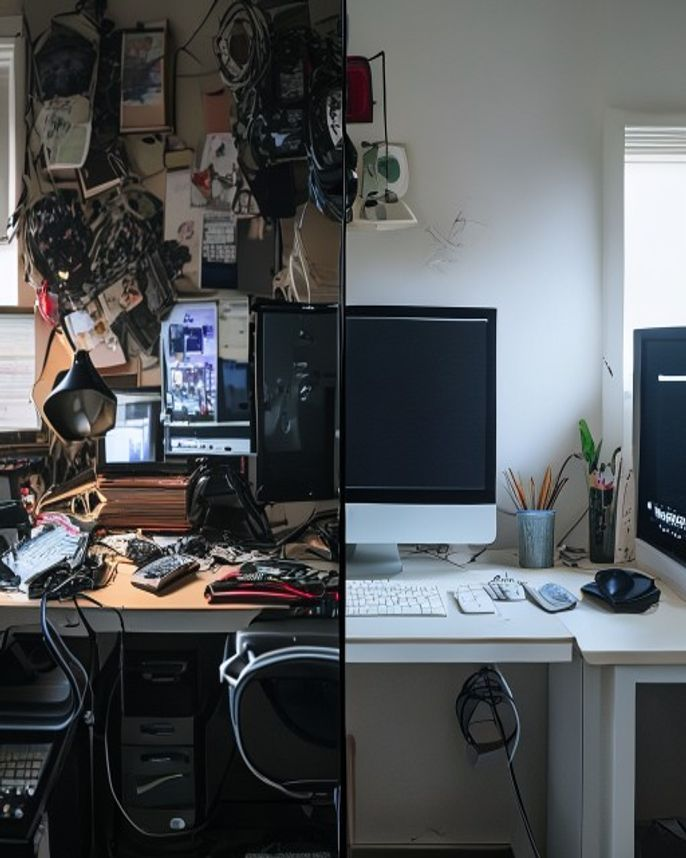
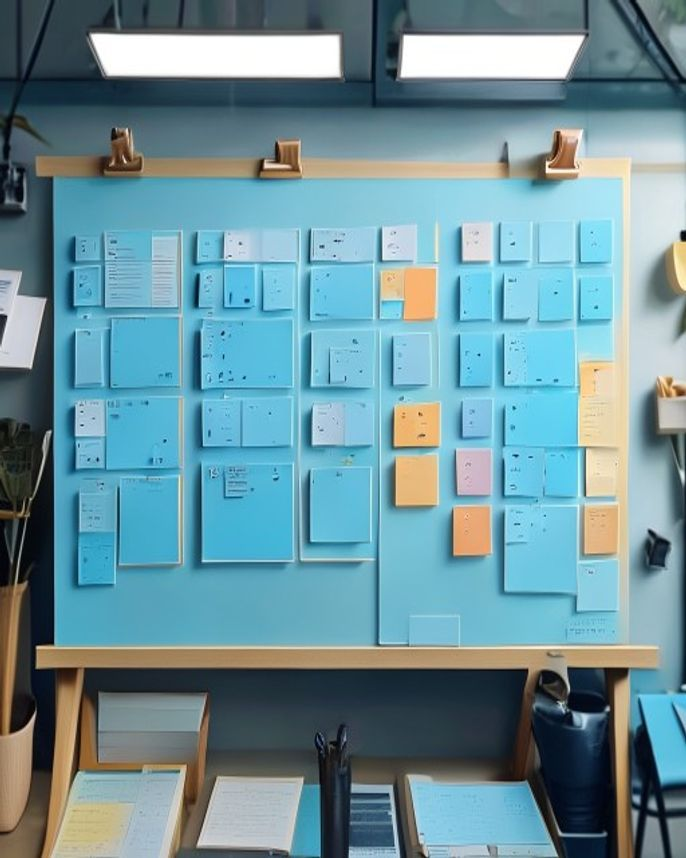

来源：2026-05-16-我把每天省3小时的系统打包了 ｜ 飞书：recvjMCsp7TdAs / recvjMCtfWAdaf / recvjMCu6h3xQf
🌙 凌晨1点我妈说：你这是养了一群祖宗吧
🥹 那天凌晨1点，我盯着屏幕上11个AI标签页发呆
公众号、小红书、视频号脚本，全都没做完
3个AI工具的提醒还在响
我妈推门进来送热牛奶，看了一眼说：
"你这是养了一群祖宗吧？"
我笑不出来。第二天我砍掉7个，只留4个Agent
选题官 / 草稿工厂 / 发布助手 / 复盘官
92天后：87篇/8200阅读/156小红书/4篇10w+/每天省3小时
3小时×30天=90小时，一年多出45天
#AI工具 #AI助手 #内容创作 #自媒体 #效率提升
种草型 · 待发布
⚔️ 用11个AI助手 vs 用4个Agent，差距比想象中大


⚖️ 真实数据，砍AI前后对比
砍之前 · 11个AI助手
切换90分钟/天 · 1篇公众号 · 凌晨在写 · 状态救火
砍之后 · 4个Agent
切换≈0 · 1长文+3小红书+1视频 · 11点收工 · 状态稳定
差别不是我变勤快了
是少了7个Agent互相调用互相debug的内耗
少即是多
4比11好用，是92天逼出来的结论
不信回头数数
你过去7天没打开过的AI工具有几个
#AI工具 #效率对比 #自媒体 #AIAgent #数字极简
对比型 · 待发布
💡 我从零搭4Agent，4周入门的真实顺序
🧰 不用一上来就把13条生产线全跑
按周拆给你
第1周 · 选题官
解决"今天写什么"，早7点出3个备选
第2周 · 草稿工厂
2小时压到30分钟初稿
口语化+禁词+段不超3句
第3-4周 · 复盘官
今天数据=明天选题输入，11点跑3分钟洞察
第5周后 · 发布助手
配图/飞书/拆条一条龙
工具：1个ChatGPT或Claude + 1个Obsidian或飞书表
够了
4周入门，3个月成型
#AI工具 #AIAgent #内容创作 #自媒体工作流 #效率提升
技巧型 · 待发布